Numerical Simulations · v2025-03-14
Offshore Structure with Wind and Wave Loading
Simulation of the Roll Forming Process
Roll Forming a Z-Profile
Press Braking after Sheet Coiling and Uncoiling
Sheet Coiling and Uncoiling
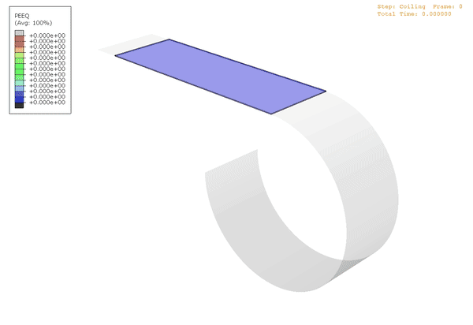
Press Braking with Residual Curvature
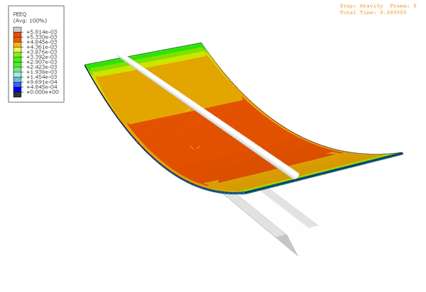
Analysis of Industrial Pressure Vessels
Finite Element Mesh
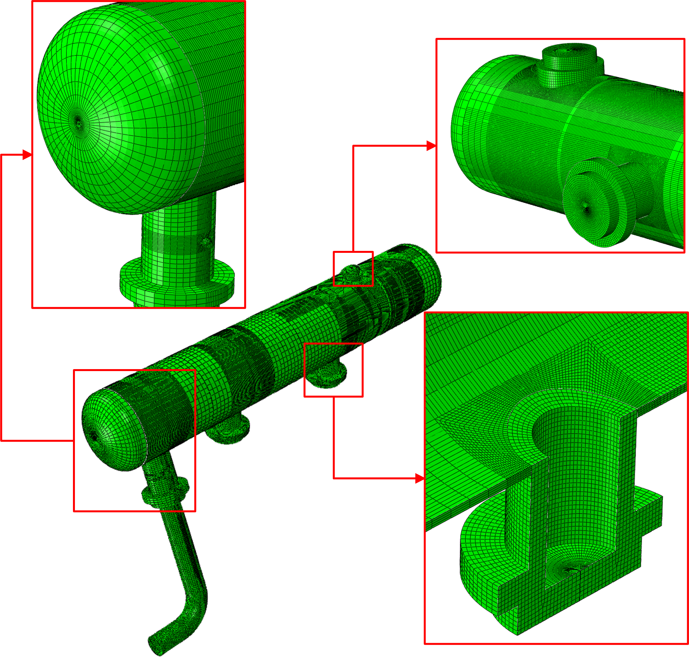
Fatigue Analysis
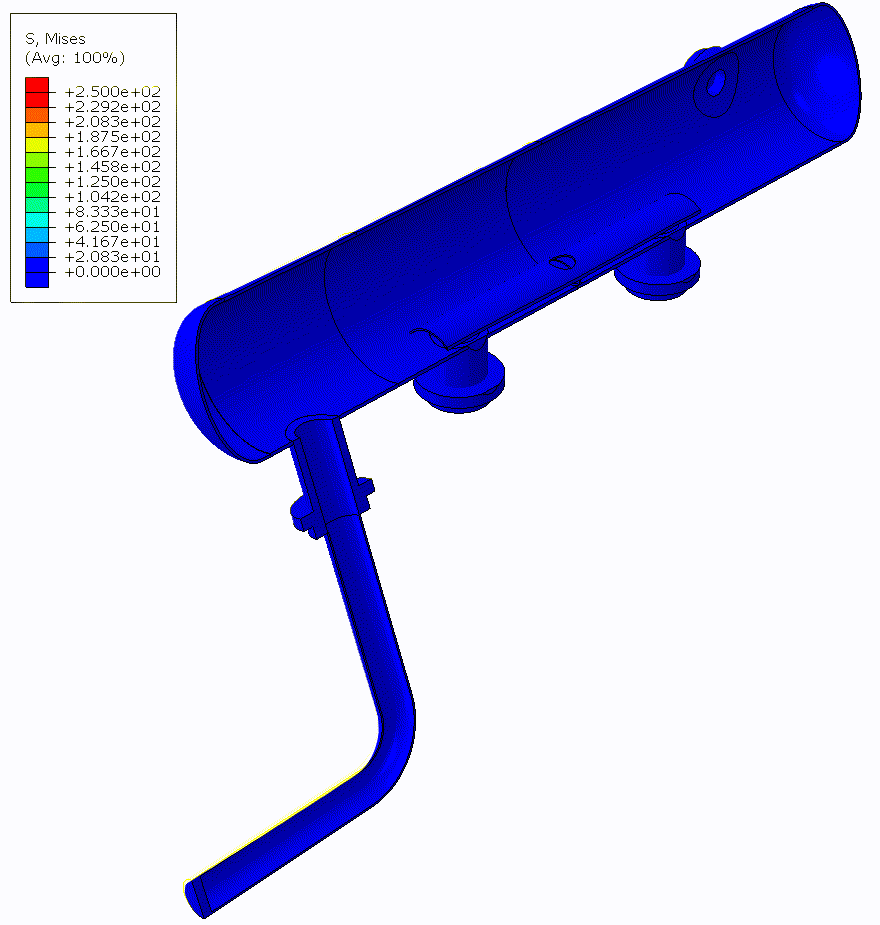
Frequency Analysis: Mode 1, 3, and 5
Fatigue Crack Propagation using a Custom Finite Element Solver
Virtual Crack Extension with Remeshing

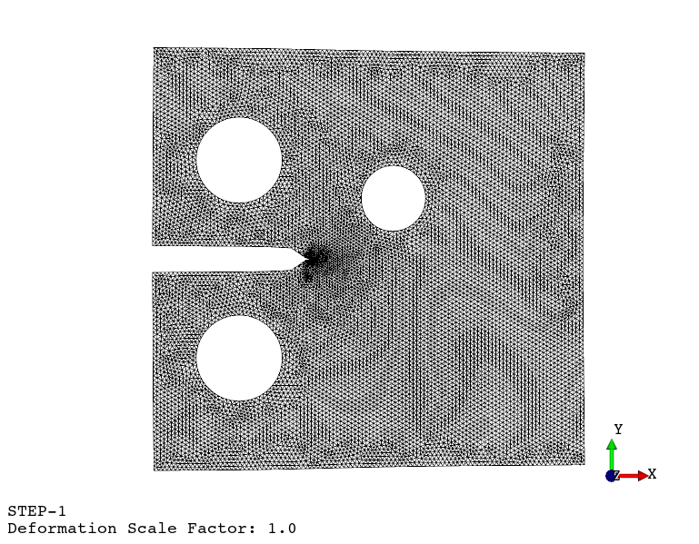
Numerical vs. Experimental Results
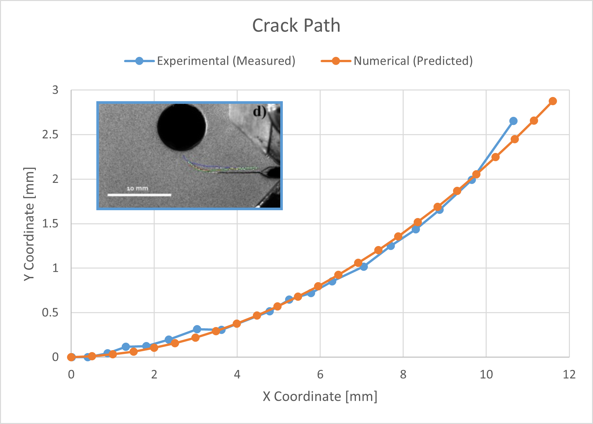
Fatigue in Bolted Joints
Modelling Adriatic Sea Levels: The Venice Flood of November 11, 2012
Input Data: Atmospheric Pressure, Wind Velocity, and Water Depth


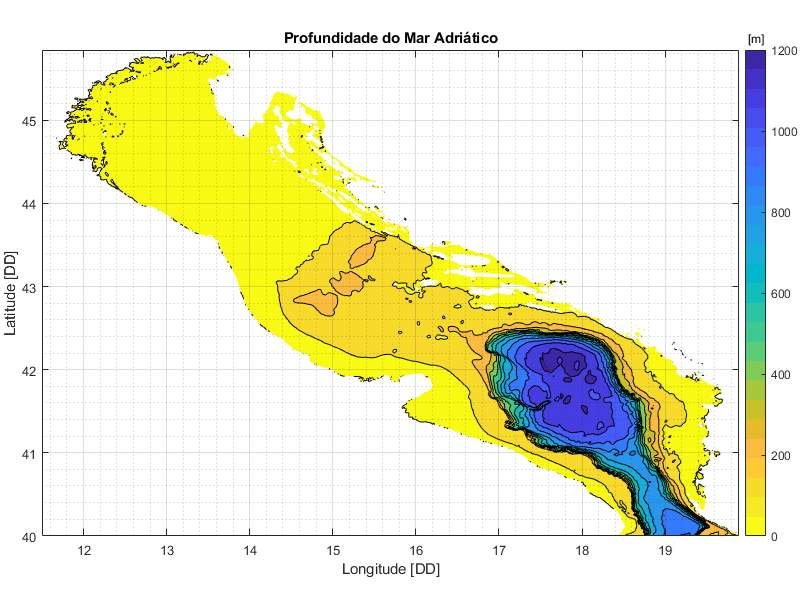
Results: Sea Level

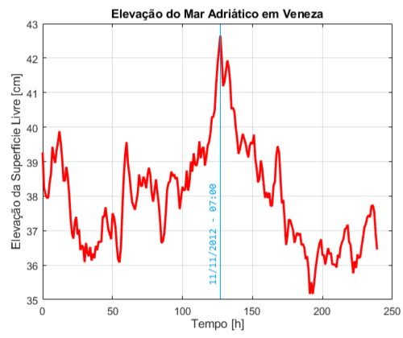
Hemodynamic Simulation and Atherosclerosis-Prone Zones in the Right Coronary Artery
Input Data: Mesh and Blood Flow Velocity and Pressure
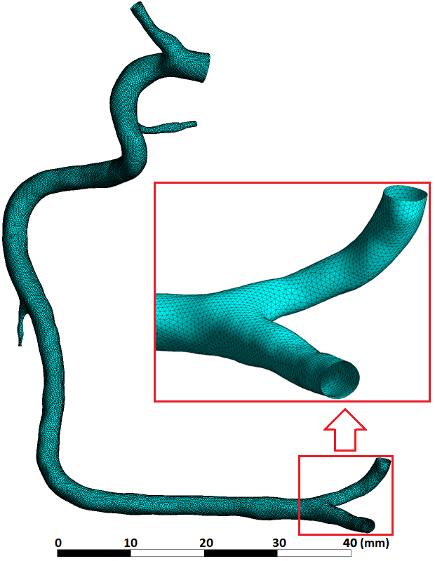
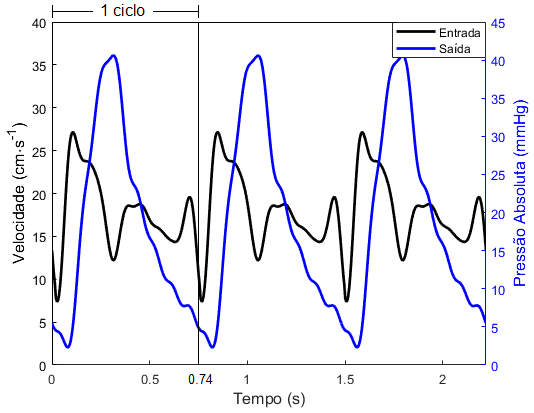
Results: Time-Averaged Wall Shear Stress (TAWSS), Oscillating Shear Index (OSI), and Relative Residence Time (RRT)
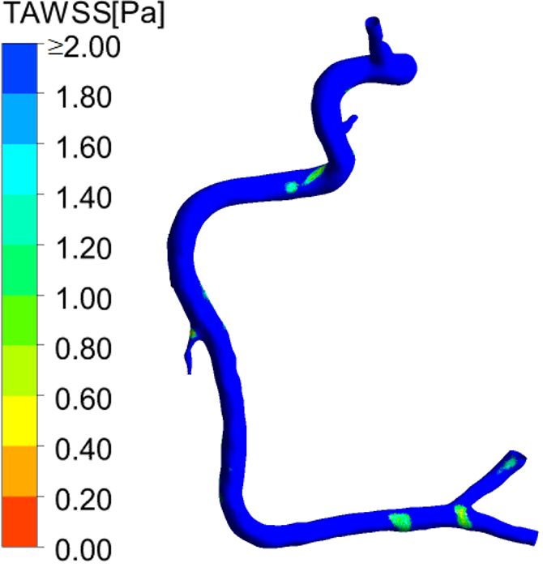
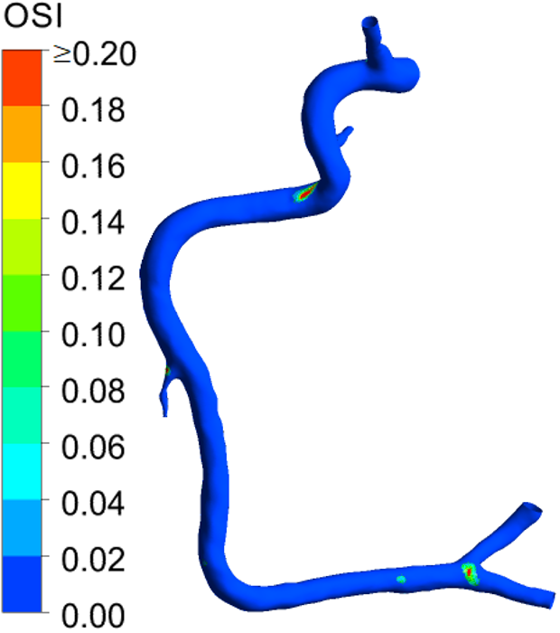
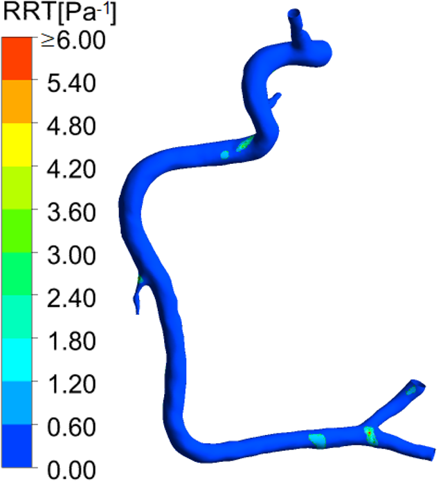
Simulating Water Pollution with a Custom Implicit Finite Element Solver
Water Pollutant Concentration over Time
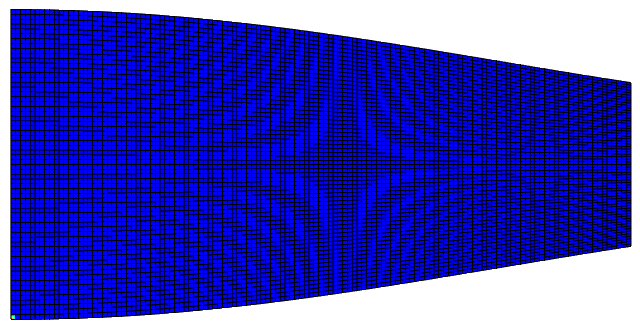
Plate Bending with a Custom Finite Element Solver
Static Analysis
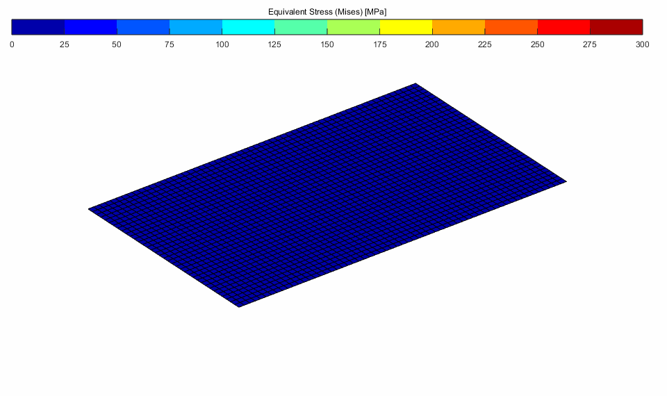
Frequency Analysis: Mode 1, 3, and 5
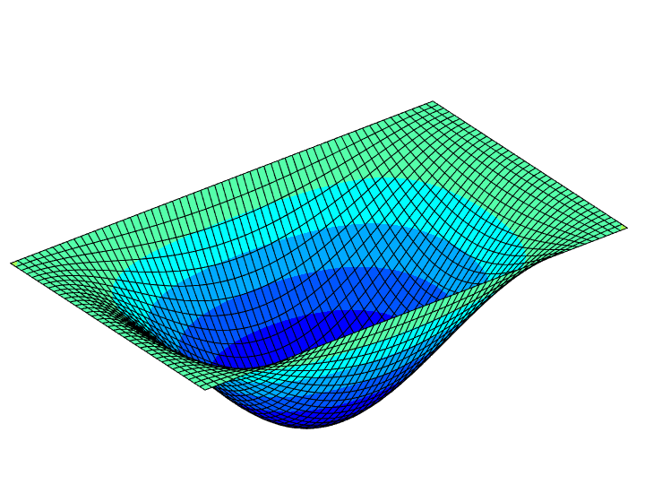
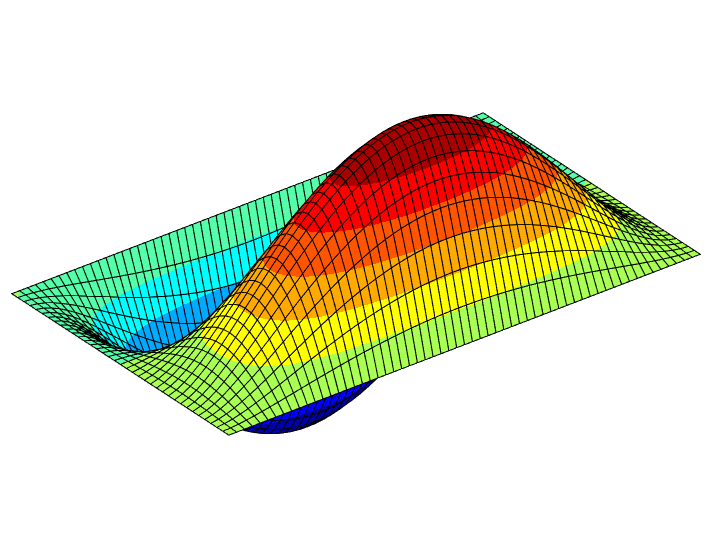
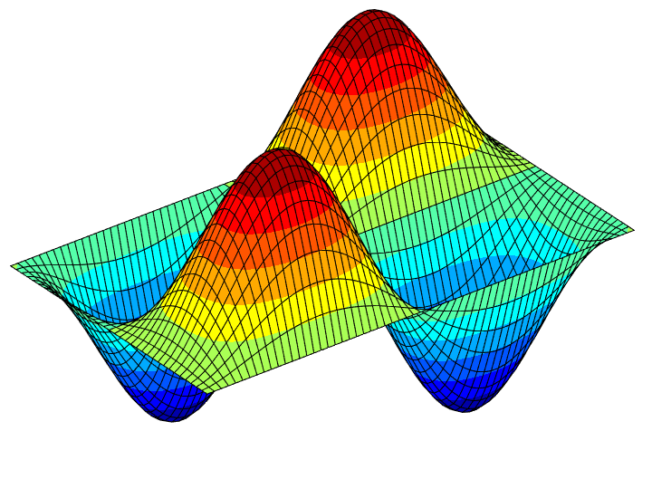